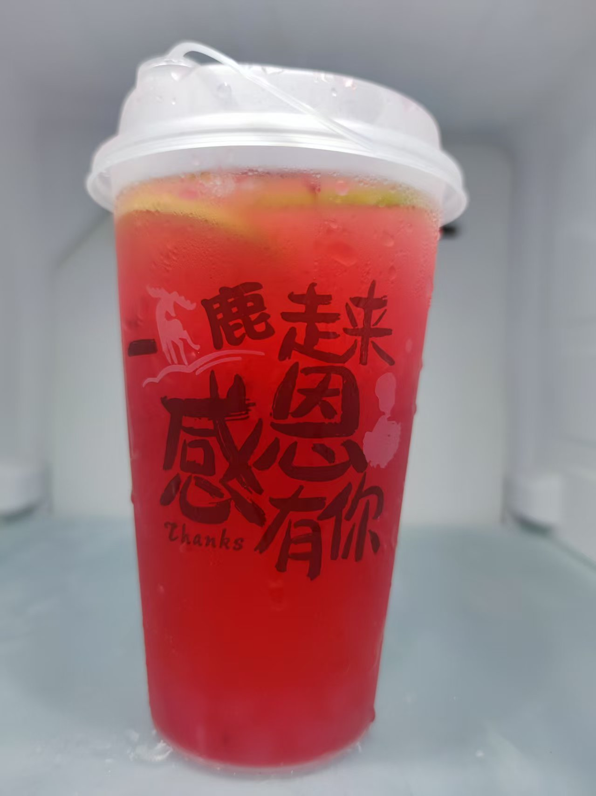

每一款产品，都藏着一段用心打磨的故事

历经八年执念，终调专属一味。
心有所念，味自天成。这杯独一无二、全程自研的专属饮品，藏着一个男孩跨越山海跨越时间的深情与执念。 从未相见，却朝朝惦念；未曾谋面，却岁岁相思。
配比皆是心意，数字皆有归处，每一个精准克数，都是刻在心底与她相关的专属密码；每一味原料选材，皆因她而起，藏着旁人不懂的温柔与偏爱。
一杯茶饮，盛满八年初心和满心热忱，亦藏着遥遥相望、始终无缘相见的意难平与遗憾。以自身漫长惦念，祝愿世间所有相遇皆能圆满无憾。
一个男孩，能爱一个素未谋面的女孩多久？ 于他而言，答案是：至少8年。岁岁坚守，皆是最沉默也最滚烫的实际证明，也是对美好感情的笃定向往。
因她一人，爱上一座城，这座城市是他八年来的满心期许， 因一人执念，赴一城余生。
他曾为她倾尽过所有，舍弃过高薪，奔赴过最严重的疫情，一腔真心毫无保留，满腔赤诚从未减半。
故事止于屏幕两端，隔着屏幕潦草收场。没有当面告别，没有圆满结局，没有久别重逢，只剩满心遗憾与无法释怀的执念。故事各有结局，相逢即是天意，一切都是最好的安排。
时光不语，深情自有回响。所有藏在配料里的数字、融在茶汤里的温柔，都是漫长岁月里最虔诚的告白。每一口回甘，是心底的温柔惦念；每一丝清甜，是藏于岁月的满心热忱。
八年朝夕，一念情深，这杯专属限定的心意之作，无关喧嚣，不问归途。只为纪念一场纯粹的心动，珍藏一份漫长的守候，把隔屏的思念、未赴的相见、满腔的温柔，全部融进这一杯独属于彼此的时光味道里。
愿每一位遇见这杯茶的人，所爱皆所得，深情不被负，能够拥有长久安稳、双向奔赴的美好爱情。